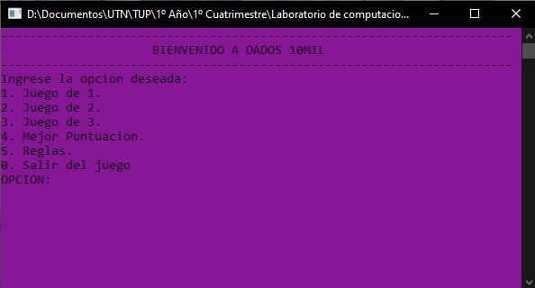
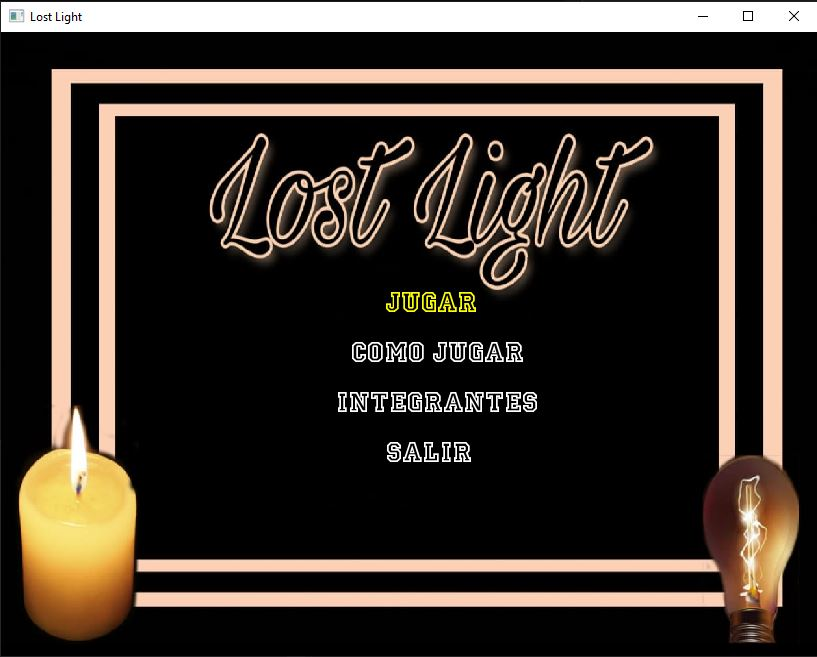
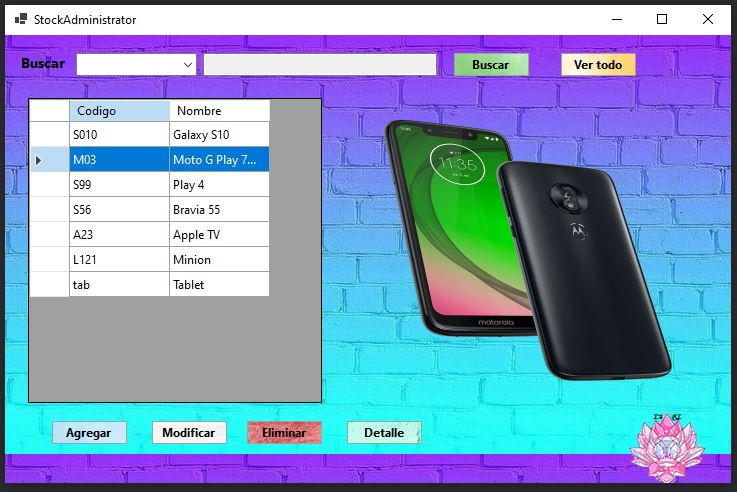

| Juego de dados 10mil | Juego "Lost Light" | Aplicación de gestión de artículos |
|  |  |  |
| Juego realizado en C++ como trabajo final de la materia Laboratorio I junto con Regina Laurentino y Enrique Menendez, primer cuatrimestre de la tecnicatura universitaria en programación. UTN FRGP. |
Juego realizado en C++ como trabajo final de la materia Laboratorio II junto con Regina Laurentino y Enrique Menendez, segundo cuatrimestre de la tecnicatura universitaria en programación. UTN FRGP. |
Programa realizado en C# para la materia Programacion III junto con Regina Laurentino, tercer cuatrimestre de la tecnicatura universitaria en programación. UTN FRGP. |